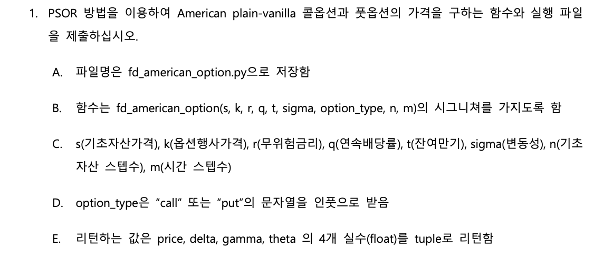
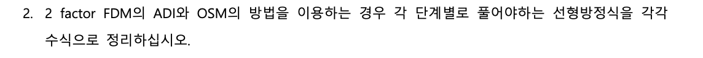
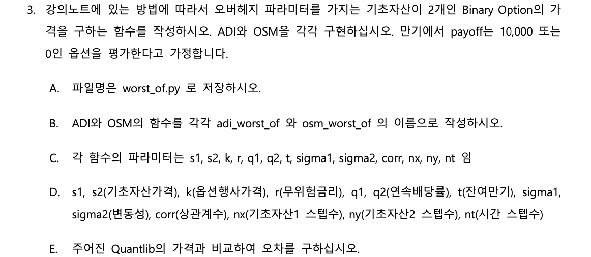

import numpy as np
from scipy.interpolate import interp1d
from blackscholes import bsprice
def fd_american_option(s0, k, r, q, t, sigma, option_type, n, m):
# Set parameter
maxS = s0 * 2 # max underlying price
theta = 0.5 # Crank-Nicolson method
omega = 1.2 # overrelaxation parameter
threshold = 1e-8 # PSOR threshold
ds = maxS / n
dt = t / m
callOrPut = 1 if option_type.lower() == 'call' else -1
s = np.arange(n + 1) * ds
# FDM coefficients
a = dt * (sigma * s[1:-1]) ** 2 / (2 * ds ** 2)
b = dt * (r - q) * s[1:-1] / (2 * ds)
d, m_, u = a - b, -2 * a - dt * r, a + b
# implicit and explicit method (theta=0.5, CN method)
A = np.diag(d[1:], -1) + np.diag(m_) + np.diag(u[:-1], 1)
Am = np.identity(n - 1) - theta * A
Ap = np.identity(n - 1) + (1 - theta) * A
ab = np.zeros((3, n - 1))
ab[0, 1:] = np.diag(Am, 1)
ab[1] = np.diag(Am)
ab[2, :-1] = np.diag(Am, -1)
v = np.maximum(callOrPut * (s - k), 0)
for j in range(m - 1, -1, -1):
v_next = np.copy(v) # For calculate greeks(theta)
# Boundary condition in American options
v[0] = np.maximum(-callOrPut * k, 0) # S=0
v[n] = np.maximum(callOrPut * (maxS - k * np.exp(-r * (m - j) * dt)), 0) # S=maxS
temp = (1 - theta) * d * v[:-2] + (1 + (1 - theta) * m_) * v[1:-1] + (1 - theta) * u * v[2:]
temp[0] += theta * d[0] * v[0]
temp[-1] += theta * u[-1] * v[-1]
# PSOR method
old_v = np.copy(v[1:-1])
change = 2*threshold
while change > threshold:
change = 0
for i in range(n - 1):
residual = temp[i] - (Am[i, :] @ old_v)
new_v = max(callOrPut * (s[i + 1] - k), old_v[i] + omega * residual / Am[i, i])
current_change = abs(new_v - old_v[i])
change = max(change, current_change)
old_v[i] = new_v
v[1:-1] = old_v
f = interp1d(s, v)
f_next = interp1d(s, v_next)
price = f(s0)
# Delta, Gamma, Theta
delta = (f(s0 + ds) - f(s0 - ds)) / (2 * ds)
gamma = (f(s0 + ds) - 2 * f(s0) + f(s0 - ds)) / (ds ** 2)
theta = (f_next(s0) - f(s0)) / (dt * 250) # 1day theta
return (price, delta, gamma, theta)금융수치해석기법 과제1
20249132 김형환
Question 1

Answer
작성한 코드는 아래와 같으며, BSM의 European put option과 가격을 비교해보았습니다.
가격이 적절하게 산출되고 있습니다.
n이 커지는 경우 가격이 발산할 수 있어 m을 그에 맞게 조정하여 가격을 산출해야합니다.
s0, k, r, q, t, sigma, option_type, n, m = 100, 100, 0.03, 0, 1, 0.2, 'put', 100, 500
PSOR = fd_american_option(s0, k, r, q, t, sigma, option_type, n, m)
BSM_price = bsprice(s0, k, r, q, t, sigma, option_type)
print('American put option FDM price is :',PSOR[0])
print('European put option Blackscholes price is :', BSM_price)American put option FDM price is : 6.731505488172526
European put option Blackscholes price is : 6.457956738703835Question 2

ADI 방식
1단계: x방향에 대해 implicit, y방향에 대해 explicit 계산
\[ \frac{v_{ij}^{n+\frac{1}{2}} - v_{ij}^n}{\Delta t / 2} = L_{ADI}^x v_{ij}^{n+\frac{1}{2}} \]
2단계: y방향에 대해 implicit, x방향에 대해 explicit 계산
\[ \frac{v_{ij}^{n+1} - v_{ij}^{n+\frac{1}{2}}}{\Delta t / 2} = L_{ADI}^y v_{ij}^{n+1} \]
ADI 방식은 위 두단계로 진행되며, 2차원 블랙숄즈 PDE를 통해 각 수식을 전개할 수 있습니다.
\[ \frac{\partial V}{\partial t} + \frac{1}{2} \sigma_1^2 S_1^2 \frac{\partial^2 V}{\partial S_1^2} + \frac{1}{2} \sigma_2^2 S_2^2 \frac{\partial^2 V}{\partial S_2^2} + \rho \sigma_1 \sigma_2 S_1 S_2 \frac{\partial^2 V}{\partial S_1 \partial S_2} + (r - q_1) S_1 \frac{\partial V}{\partial S_1} + (r - q_2) S_2 \frac{\partial V}{\partial S_2} - rV = 0 \]
1단계 전개
\[ L_{ADI}^x v_{ij}^{n+\frac{1}{2}} = \frac{1}{2} \sigma_x^2 x_i^2 \frac{v_{i+1,j}^{n+\frac{1}{2}} - 2v_{ij}^{n+\frac{1}{2}} + v_{i-1,j}^{n+\frac{1}{2}}}{h_x^2} + r x_i \frac{v_{i+1,j}^{n+\frac{1}{2}} - v_{i-1,j}^{n+\frac{1}{2}}}{2h_x} \] \[ + \frac{1}{2} \sigma_y^2 y_j^2 \frac{v_{i,j+1}^n - 2v_{ij}^n + v_{i,j-1}^n}{h_y^2} + r y_j \frac{v_{i,j+1}^n - v_{i,j-1}^n}{2h_y} \] \[ + \rho \sigma_x \sigma_y x_i y_j \frac{v_{i+1,j+1}^n - v_{i-1,j+1}^n - v_{i+1,j-1}^n + v_{i-1,j-1}^n}{4 h_x h_y} - r v_{ij}^{n+\frac{1}{2}} \]
이 이산화 전개식을 위에 대입하고, 좌변에 \(v^{n+\frac{1}{2}}\) 항들을 모아서 정리해보겠습니다.
먼저, \(v_{ij}^{n+1/2}\)에 대해서 식을 전개하면,
\[ v_{ij}^{n+\frac{1}{2}} = v_{ij}^n + \frac{\Delta t}{4} \sigma_x^2 x_i^2 \frac{v_{i+1,j}^{n+\frac{1}{2}} - 2v_{ij}^{n+\frac{1}{2}} + v_{i-1,j}^{n+\frac{1}{2}}}{h_x^2} + \frac{\Delta t}{4} r x_i \frac{v_{i+1,j}^{n+\frac{1}{2}} - v_{i-1,j}^{n+\frac{1}{2}}}{h_x} \] \[ +\frac{\Delta t}{4} \sigma_y^2 y_j^2 \frac{v_{i,j+1}^n - 2v_{ij}^n + v_{i,j-1}^n}{h_y^2} + \frac{\Delta t}{4} r y_j \frac{v_{i,j+1}^n - v_{i,j-1}^n}{h_y} \] \[ +\frac{\Delta t}{4} \rho \sigma_x \sigma_y x_i y_j \frac{v_{i+1,j+1}^n - v_{i-1,j+1}^n - v_{i+1,j-1}^n + v_{i-1,j-1}^n}{h_x h_y} - \frac{\Delta t}{2} r v_{ij}^{n+\frac{1}{2}} \]
여기서, \(a_x = \frac{\Delta t}{4} \sigma_x^2 x_i^2 \frac{1}{h_x^2}\), \(b_x = \frac{\Delta t}{4} \frac{r x_i}{h_x}\), \(a_y = \frac{\Delta t}{4} \sigma_y^2 y_j^2 \frac{1}{h_y^2}\), \(b_y = \frac{\Delta t}{4} \frac{r y_j}{h_y}\)
\(C = \frac{\Delta t}{4} \rho \sigma_x \sigma_y x_i y_j \frac{1}{h_x h_y}\)라고 하면,
\[ v_{ij}^{n+\frac{1}{2}} = v_{ij}^n + a_x \left( v_{i+1,j}^{n+\frac{1}{2}} - 2v_{ij}^{n+\frac{1}{2}} + v_{i-1,j}^{n+\frac{1}{2}} \right) + b_x \left( v_{i+1,j}^{n+\frac{1}{2}} - v_{i-1,j}^{n+\frac{1}{2}} \right) \] \[ +a_y \left( v_{i,j+1}^n - 2v_{ij}^n + v_{i,j-1}^n \right) + b_y \left( v_{i,j+1}^n - v_{i,j-1}^n \right)+C \left( v_{i+1,j+1}^n - v_{i-1,j+1}^n - v_{i+1,j-1}^n + v_{i-1,j-1}^n \right) - \frac{\Delta t}{2} r v_{ij}^{n+\frac{1}{2}} \]
마지막으로, \(m_x = 1 + \frac{\Delta t}{2} r + 2a_x,\;\;- (a + b) = d,\;\; -(a-b)=u\)라고 하면
\[ u_x v_{i-1,j}^{n+\frac{1}{2}} + m_x v_{ij}^{n+\frac{1}{2}} + d_x v_{i+1,j}^{n+\frac{1}{2}} = explicit_y \]
\[ explicit_y=v_{ij}^n+a_y \left( v_{i,j+1}^n - 2v_{ij}^n + v_{i,j-1}^n \right) + b_y \left( v_{i,j+1}^n - v_{i,j-1}^n \right)+C \left( v_{i+1,j+1}^n - v_{i-1,j+1}^n - v_{i+1,j-1}^n + v_{i-1,j-1}^n \right) \]
이제, 좌변은 implicit한 형태로, 우변은 explicit한 형태로 정리되었습니다.
만기시점부터 과거로 역순하여 계산을 진행하게 되며,
한번의 시간구간에 대하여, 좌변은 각 explicit y결과값에 따라 삼중대각행렬을 차례로 구성하여 풀면 됩니다.
(\(N_y-1\)회 삼중대각행렬을 풀어야하며, u가 하방 diagonal, d가 상방 diagonal 및 m이 중단 diagonal 원소가 됨)
(기초자산에 배당이 있는 경우, r 대신에 r-q를 적용)
2단계 전개
\[ L_{ADI}^y v_{ij}^{n+1} = \frac{1}{2} \sigma_x^2 x_i^2 \frac{v_{i+1,j}^{n+1} - 2v_{ij}^{n+1} + v_{i-1,j}^{n+1}}{h_x^2} + r x_i \frac{v_{i+1,j}^{n+1} - v_{i-1,j}^{n+1}}{2h_x} \] \[ + \frac{1}{2} \sigma_y^2 y_j^2 \frac{v_{i,j+1}^{n+\frac{1}{2}} - 2v_{ij}^{n+\frac{1}{2}} + v_{i,j-1}^{n+\frac{1}{2}}}{h_y^2} + r y_j \frac{v_{i,j+1}^{n+\frac{1}{2}} - v_{i,j-1}^{n+\frac{1}{2}}}{2h_y} \] \[ + \rho \sigma_x \sigma_y x_i y_j \frac{v_{i+1,j+1}^{n+\frac{1}{2}} - v_{i-1,j+1}^{n+\frac{1}{2}} - v_{i+1,j-1}^{n+\frac{1}{2}} + v_{i-1,j-1}^{n+\frac{1}{2}}}{4 h_x h_y} - r v_{ij}^{n+1} \]
2단계 이산화 전개식은 위와 같습니다.
1단계와 마찬가지로 순차적으로 정리하면 아래의 결과를 얻을 수 있습니다.
\[ u_y v_{i,j-1}^{n+1} + m_y v_{ij}^{n+1} + d_y v_{i,j+1}^{n+1} = explicit_x \]
\[ explicit_x=v_{ij}^{n+\frac{1}{2}} + a_x\left( v_{i+1,j}^{n+\frac{1}{2}} - 2v_{ij}^{n+\frac{1}{2}} + v_{i-1,j}^{n+\frac{1}{2}} \right) + b_x\left( v_{i+1,j}^{n+\frac{1}{2}}- v_{i-1,j}^{n+\frac{1}{2}} \right) + C \left( v_{i+1,j+1}^{n+\frac{1}{2}} - v_{i-1,j+1}^{n+\frac{1}{2}} - v_{i+1,j-1}^{n+\frac{1}{2}} + v_{i-1,j-1}^{n+\frac{1}{2}} \right) \]
1단계에 이어서 각 explicit x결과값에 따라 y의 삼중대각행렬을 풀면 됩니다.
OSM 방식
1단계: x에 대한 연산
\[ \frac{v_{ij}^{n+\frac{1}{2}} - v_{ij}^n}{\Delta t} = L_{OS}^x v_{ij}^{n+\frac{1}{2}} \]
2단계: y에 대한 연산
\[ \frac{v_{ij}^{n+1} - v_{ij}^{n+\frac{1}{2}}}{\Delta t} = L_{OS}^y v_{ij}^{n+1} \]
OSM 방식도 ADI 방식과 유사하게 위 두단계로 진행되며, 2차원 블랙숄즈 PDE를 통해 각 수식을 전개할 수 있습니다.
1단계 전개
\[ L_{OS}^x v_{ij}^{n+\frac{1}{2}} = \frac{1}{2} \sigma_x^2 x_i^2 \frac{v_{i+1,j}^{n+\frac{1}{2}} - 2v_{ij}^{n+\frac{1}{2}} + v_{i-1,j}^{n+\frac{1}{2}}}{h_x^2} + r x_i \frac{v_{i+1,j}^{n+\frac{1}{2}} - v_{i-1,j}^{n+\frac{1}{2}}}{2h_x} \] \[ + \frac{1}{2} \rho \sigma_x \sigma_y x_i y_j \frac{v_{i+1,j+1}^n - v_{i-1,j+1}^n - v_{i+1,j-1}^n + v_{i-1,j-1}^n}{4 h_x h_y} - \frac{1}{2} r v_{ij}^{n+\frac{1}{2}} \]
\[ \Rightarrow \frac{v_{ij}^{n+\frac{1}{2}} - v_{ij}^n}{\Delta t} = \frac{1}{2} \sigma_x^2 x_i^2 \frac{v_{i+1,j}^{n+\frac{1}{2}} - 2v_{ij}^{n+\frac{1}{2}} + v_{i-1,j}^{n+\frac{1}{2}}}{h_x^2} + r x_i \frac{v_{i+1,j}^{n+\frac{1}{2}} - v_{i-1,j}^{n+\frac{1}{2}}}{2h_x} \] \[ +\frac{1}{2} \rho \sigma_x \sigma_y x_i y_j \frac{v_{i+1,j+1}^n - v_{i-1,j+1}^n - v_{i+1,j-1}^n + v_{i-1,j-1}^n}{4 h_x h_y} - \frac{1}{2} r v_{ij}^{n+\frac{1}{2}} \]
\(v_{ij}^{n+\frac{1}{2}}\)에 대해서 정리하면,
\[ \left( 1 + \frac{\Delta t}{2} r + \Delta t \cdot \frac{\sigma_x^2 x_i^2}{h_x^2} \right) v_{ij}^{n+\frac{1}{2}} = v_{ij}^n + \frac{\Delta t \cdot \sigma_x^2 x_i^2}{2 h_x^2} \left( v_{i+1,j}^{n+\frac{1}{2}} + v_{i-1,j}^{n+\frac{1}{2}} \right) + \frac{\Delta t \cdot r x_i}{2 h_x} \left( v_{i+1,j}^{n+\frac{1}{2}} - v_{i-1,j}^{n+\frac{1}{2}} \right) \] \[ +\frac{\Delta t}{2} \rho \sigma_x \sigma_y x_i y_j \frac{v_{i+1,j+1}^n - v_{i-1,j+1}^n - v_{i+1,j-1}^n + v_{i-1,j-1}^n}{4 h_x h_y} \]
이제, \(a_x = \frac{\Delta t \cdot \sigma_x^2 x_i^2}{2 h_x^2}\), \(b_x = \frac{\Delta t \cdot r x_i}{2 h_x}\), \(C = \frac{\Delta t}{2} \rho \sigma_x \sigma_y x_i y_j \frac{1}{4 h_x h_y}\)
\(m_x = 1 + \frac{\Delta t}{2} r + \Delta t \cdot \frac{\sigma_x^2 x_i^2}{h_x^2}\), \(- (a_x + b_x) = d_x,\;\; -(a_x-b_x)=u_x\)라고 하면,
\[ u_xv_{i-1,j}^{n+\frac{1}{2}}+m_x v_{ij}^{n+\frac{1}{2}}+d_xv_{i+1,j}^{n+\frac{1}{2}} = v_{ij}^n+C \left( v_{i+1,j+1}^n - v_{i-1,j+1}^n - v_{i+1,j-1}^n + v_{i-1,j-1}^n \right)=explicit_y \]
위와같이 좌변은 implicit 및 우변은 explicit 방식으로 정리됩니다.
만기시점부터 과거로 역순하여 계산을 진행하게 되며,
한번의 시간구간에 대하여, 좌변은 각 explicit y결과값에 따라 삼중대각행렬을 차례로 구성하여 풀면 됩니다.
(\(N_y-1\)회 삼중대각행렬을 풀어야하며, u가 하방 diagonal, d가 상방 diagonal 및 m이 중단 diagonal 원소가 됨)
(기초자산에 배당이 있는 경우, r 대신에 r-q를 적용)
2단계 전개
\[ L_{OS}^y v_{ij}^{n+1} = \frac{1}{2} \sigma_y^2 y_j^2 \frac{v_{i,j+1}^{n+1} - 2v_{ij}^{n+1} + v_{i,j-1}^{n+1}}{h_y^2} + r y_j \frac{v_{i,j+1}^{n+1} - v_{i,j-1}^{n+1}}{2h_y} \] \[ + \frac{1}{2} \rho \sigma_x \sigma_y x_i y_j \frac{v_{i+1,j+1}^{n+\frac{1}{2}} - v_{i-1,j+1}^{n+\frac{1}{2}} - v_{i+1,j-1}^{n+\frac{1}{2}} + v_{i-1,j-1}^{n+\frac{1}{2}}}{4 h_x h_y} - \frac{1}{2} r v_{ij}^{n+1} \]
1단게와 동일한 과정으로 2단계 수식을 전개하면 다음과 같습니다.
\[ u_y v_{i,j-1}^{n+1} + m_y v_{ij}^{n+1} + d_y v_{i,j+1}^{n+1} = v_{ij}^{n+\frac{1}{2}} + C \left( v_{i+1,j+1}^{n+\frac{1}{2}} - v_{i-1,j+1}^{n+\frac{1}{2}} - v_{i+1,j-1}^{n+\frac{1}{2}} + v_{i-1,j-1}^{n+\frac{1}{2}} \right) \]
풀이방법도 1단계와 동일하게, explicit 및 implicit 연산을 차례로 진행하면 됩니다.
Question 3

Answer
Q2의 수식에 따라 작성한 코드는 아래와 같으며, QuantLib 결과값과 비교해보았습니다.
import numpy as np
from scipy.linalg import solve_banded
from scipy.interpolate import RectBivariateSpline
from ql_worst_of import ql_worst_of
def adi_worst_of(s1, s2, k, r, q1, q2, t, sigma1, sigma2, corr, oh, nx, ny, nt):
# Set parameter
smax1, smax2 = s1 * 2, s2 * 2 # max underlying price
ds1, ds2, dt = smax1 / nx, smax2 / ny, t / nt
s1_v, s2_v = np.arange(nx + 1) * ds1, np.arange(ny + 1) * ds2
s_1, s_2 = np.meshgrid(s1_v, s2_v)
# Set payoff : 10000
v = np.zeros((ny + 1, nx + 1))
v = np.where(np.minimum(s_1, s_2) >= k, 10000, v)
v = np.where((np.minimum(s_1, s_2) >= k - 1 / oh) & (np.minimum(s_1, s_2) < k),
10000 * oh * (np.minimum(s_1, s_2) - (k - 1 / oh)), v)
# FDM coefficients
a1 = (dt * sigma1**2 * s_1**2) / (4 * ds1**2)
b1 = (dt * (r - q1) * s_1) / (4 * ds1)
d1 = - (a1[:, 1:-1] + b1[:, 1:-1])
u1 = - (a1[:, 1:-1] - b1[:, 1:-1])
m1 = 1 + 2 * a1[:, 1:-1] + dt * r / 2
a2 = (dt * sigma2**2 * s_2**2) / (4 * ds2**2)
b2 = (dt * (r - q2) * s_2) / (4 * ds2)
d2 = - (a2[1:-1, :] + b2[1:-1, :])
u2 = - (a2[1:-1, :] - b2[1:-1, :])
m2 = 1 + 2 * a2[1:-1, :] + dt * r / 2
c = dt * corr * sigma1 * sigma2 * s_1 * s_2 / (8 * ds1 * ds2)
for n in range(nt - 1, -1, -1):
v_next = v
# implicit in x, explicit in y
for j in range(1, ny):
ex_y_ij = v[j, 1:-1] + c[j, 1:-1] * (v[j+1, 2:] - v[j-1, 2:] - v[j+1, :-2] + v[j-1, :-2]) + \
a2[j, 1:-1] * (v[j+1, 1:-1] - 2 * v[j, 1:-1] + v[j-1, 1:-1]) + \
b2[j, 1:-1] * (v[j+1, 1:-1] - v[j-1, 1:-1])
ex_y_ij[0] -= u1[j, 0] * v[j, 0]
ex_y_ij[-1] -= d1[j, -1] * v[j, -1]
# Generate tri-diagonal matrix
ab_x = np.zeros((3, nx - 1))
ab_x[0, 1:] = d1[j, :-1]
ab_x[1] = m1[j, :]
ab_x[2, :-1] = u1[j, 1:]
v[j, 1:-1] = solve_banded((1, 1), ab_x, ex_y_ij)
# implicit in y, explicit in x
for i in range(1, nx):
ex_x_ij = v[1:-1, i] + c[1:-1, i] * (v[2:, i+1] - v[:-2, i+1] - v[2:, i-1] + v[:-2, i - 1]) + \
a1[1:-1, i] * (v[1:-1, i+1] - 2 * v[1:-1, i] + v[1:-1, i-1]) + \
b1[1:-1, i] * (v[1:-1, i+1] - v[1:-1, i-1])
ex_x_ij[0] -= u2[0, i] * v[0, i]
ex_x_ij[-1] -= d2[-1, i] * v[-1, i]
# Generate tri-diagonal matrix
ab_y = np.zeros((3, ny - 1))
ab_y[0, 1:] = d2[:-1, i]
ab_y[1] = m2[:, i]
ab_y[2, :-1] = u2[1:, i]
v[1:-1, i] = solve_banded((1, 1), ab_y, ex_x_ij)
# Boundary condition
v[0, :] = 2 * v[1, :] - v[2, :]
v[-1, :] = 2 * v[-2, :] - v[-3, :]
v[:, 0] = 2 * v[:, 1] - v[:, 2]
v[:, -1] = 2 * v[:, -2] - v[:, -3]
v[0, 0] = v[0, 1] + v[1, 0] - v[1, 1]
v[-1, 0] = v[-2, 0] + v[-1, 1] - v[-2, 1]
v[0, -1] = v[0, -2] + v[1, -1] - v[1, -2]
v[-1, -1] = v[-1, -2] + v[-2, -1] - v[-2, -2]
f = RectBivariateSpline(s2_v, s1_v, v)
f_next = RectBivariateSpline(s2_v, s1_v, v_next)
# Greeks
price = f(s2, s1)[0, 0]
delta1 = (f(s2, s1 + ds1)[0, 0] - f(s2, s1 - ds1)[0, 0]) / (2 * ds1)
delta2 = (f(s2 + ds2, s1)[0, 0] - f(s2 - ds2, s1)[0, 0]) / (2 * ds2)
gamma1 = (f(s2, s1 + ds1)[0, 0] - 2 * price + f(s2, s1 - ds1)[0, 0]) / (ds1**2)
gamma2 = (f(s2 + ds2, s1)[0, 0] - 2 * price + f(s2 - ds2, s1)[0, 0]) / (ds2**2)
cross_gamma = (f(s2 + ds2, s1 + ds1)[0, 0] - f(s2 + ds2, s1 - ds1)[0, 0] -
f(s2 - ds2, s1 + ds1)[0, 0] + f(s2 - ds2, s1 - ds1)[0, 0]) / (4 * ds1 * ds2)
theta = (f_next(s2, s1)[0, 0] - f(s2, s1)[0, 0]) / (dt * 250) # 1day theta
return (price, delta1, delta2, gamma1, gamma2, cross_gamma, theta)
def osm_worst_of(s1, s2, k, r, q1, q2, t, sigma1, sigma2, corr, oh, nx, ny, nt):
# Set parameter
smax1, smax2 = s1*2, s2*2 # max underlying price
ds1, ds2, dt = smax1 / nx, smax2 / ny, t / nt
s1_v, s2_v = np.arange(nx + 1) * ds1, np.arange(ny + 1) * ds2
s_1, s_2 = np.meshgrid(s1_v, s2_v)
# Set payoff : 10000
v = np.zeros((ny + 1, nx + 1))
v = np.where(np.minimum(s_1, s_2) >= k, 10000, v)
v = np.where((np.minimum(s_1, s_2) >= k - 1 / oh) & (np.minimum(s_1, s_2) < k),
10000 * oh * (np.minimum(s_1, s_2) - (k - 1 / oh)), v)
# FDM coefficients
a1 = (dt * sigma1**2 * s_1**2) / (2 * ds1**2)
b1 = (dt * (r - q1) * s_1) / (2 * ds1)
d1 = - (a1[:,1:-1] + b1[:,1:-1])
u1 = - (a1[:,1:-1] - b1[:,1:-1])
m1 = 1 + 2*a1[:,1:-1] + dt * r / 2
a2 = (dt * sigma2**2 * s_2**2) / (2 * ds2**2)
b2 = (dt * (r - q2) * s_2) / (2 * ds2)
d2 = - (a2[1:-1,:] + b2[1:-1,:])
u2 = - (a2[1:-1,:] - b2[1:-1,:])
m2 = 1 + 2*a2[1:-1,:] + dt * r / 2
c = dt * corr * sigma1 * sigma2 * s_1 * s_2 / (8 * ds1 * ds2)
for n in range(nt - 1, -1, -1):
v_next = v
# For x
for j in range(1, ny):
# explicit
ex_y_ij = v[j,1:-1] + c[j,1:-1] * (v[j+1, 2:] - v[j-1, 2:] - v[j+1, :-2] + v[j-1, :-2])
ex_y_ij[0] -= u1[j,0]*v[j,0]
ex_y_ij[-1] -= d1[j,-1]*v[j,-1]
# implicit
ab_x = np.zeros((3, nx - 1))
ab_x[0, 1:] = d1[j, :-1]
ab_x[1] = m1[j, :]
ab_x[2, :-1] = u1[j, 1:]
v[j, 1:-1] = solve_banded((1, 1), ab_x, ex_y_ij)
# For y
for i in range(1, nx):
# Explicit
ex_x_ij = v[1:-1, i] + c[1:-1, i] * (v[2:, i+1] - v[:-2, i+1] - v[2:, i-1] + v[:-2, i-1])
ex_x_ij[0] -= u2[0, i] * v[0, i]
ex_x_ij[-1] -= d2[-1, i] * v[-1, i]
# Implicit
ab_y = np.zeros((3, ny - 1))
ab_y[0, 1:] = d2[:-1, i]
ab_y[1] = m2[:, i]
ab_y[2, :-1] = u2[1:, i]
v[1:-1, i] = solve_banded((1, 1), ab_y, ex_x_ij)
# Boundary condition
v[0, :] = 2 * v[1, :] - v[2, :]
v[-1, :] = 2 * v[-2, :] - v[-3, :]
v[:, 0] = 2 * v[:, 1] - v[:, 2]
v[:, -1] = 2 * v[:, -2] - v[:, -3]
v[0, 0] = v[0, 1] + v[1, 0] - v[1, 1]
v[-1, 0] = v[-2, 0] + v[-1, 1] - v[-2, 1]
v[0, -1] = v[0, -2] + v[1, -1] - v[1, -2]
v[-1, -1] = v[-1, -2] + v[-2, -1] - v[-2, -2]
f = RectBivariateSpline(s2_v, s1_v, v)
f_next = RectBivariateSpline(s2_v, s1_v, v_next)
# Greeks
price = f(s2, s1)[0, 0]
delta1 = (f(s2, s1 + ds1)[0, 0] - f(s2, s1 - ds1)[0, 0]) / (2 * ds1)
delta2 = (f(s2 + ds2, s1)[0, 0] - f(s2 - ds2, s1)[0, 0]) / (2 * ds2)
gamma1 = (f(s2, s1 + ds1)[0, 0] - 2 * price + f(s2, s1 - ds1)[0, 0]) / (ds1**2)
gamma2 = (f(s2 + ds2, s1)[0, 0] - 2 * price + f(s2 - ds2, s1)[0, 0]) / (ds2**2)
cross_gamma = (f(s2 + ds2, s1 + ds1)[0, 0] - f(s2 + ds2, s1 - ds1)[0, 0] -
f(s2 - ds2, s1 + ds1)[0, 0] + f(s2 - ds2, s1 - ds1)[0, 0]) / (4 * ds1 * ds2)
theta = (f_next(s2, s1)[0, 0] - f(s2, s1)[0, 0]) / (dt * 250) # 1day theta
return (price, delta1, delta2, gamma1, gamma2, cross_gamma, theta)가격에 다소 오차는 있으나, 자산가격과 시간의 grid를 촘촘하게 구성하면 줄어들 것 입니다.
nx와 ny 및 변동성에 따라서 가격이 발산할 수 있어 가격이 수렴하도록 nt 등을 적절히 조정해야합니다.
s1, s2, k, r, q1, q2, t, sigma1, sigma2, corr = 100, 100, 100, 0.03, 0.01, 0.015, 1, 0.15, 0.2, 0.5
oh, nx, ny, nt = 1, 150, 200, 1000
ADI = adi_worst_of(s1, s2, k, r, q1, q2, t, sigma1, sigma2, corr, oh, nx, ny, nt)
OSM = osm_worst_of(s1, s2, k, r, q1, q2, t, sigma1, sigma2, corr, oh, nx, ny, nt)
QL_price = ql_worst_of(s1, s2, k, r, q1, q2, t, sigma1, sigma2, corr, 'call', oh)*10000
print('ADI price is :', ADI[0])
print('OSM price is :', OSM[0])
print('QuantLib price is :', QL_price)
print('Difference of ADI :', abs(QL_price - ADI[0]), " OSM :", abs(QL_price - OSM[0]))ADI price is : 3400.3955637215417
OSM price is : 3433.481179436488
QuantLib price is : 3408.8657082299446
Difference of ADI : 8.470144508402882 OSM : 24.61547120654359오차 수준은 약 1% 이내입니다.